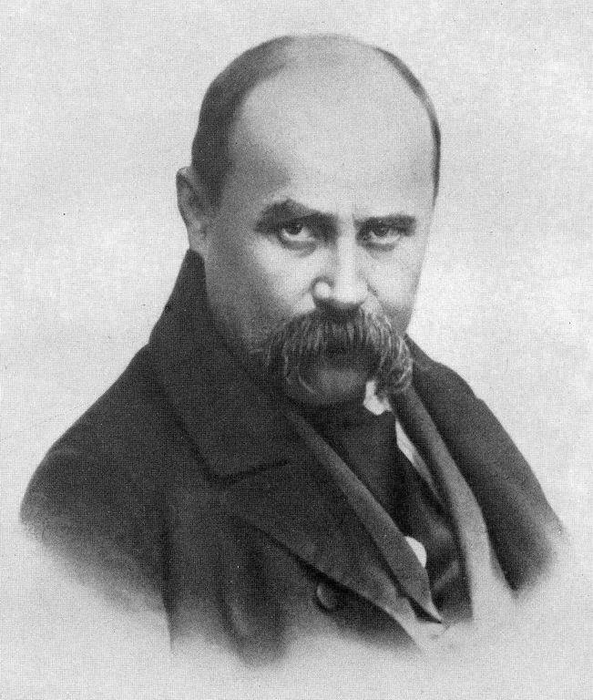
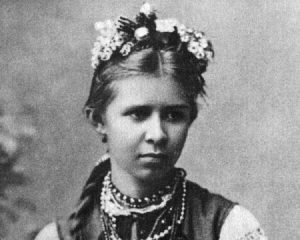
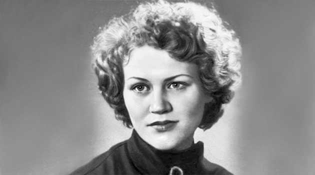
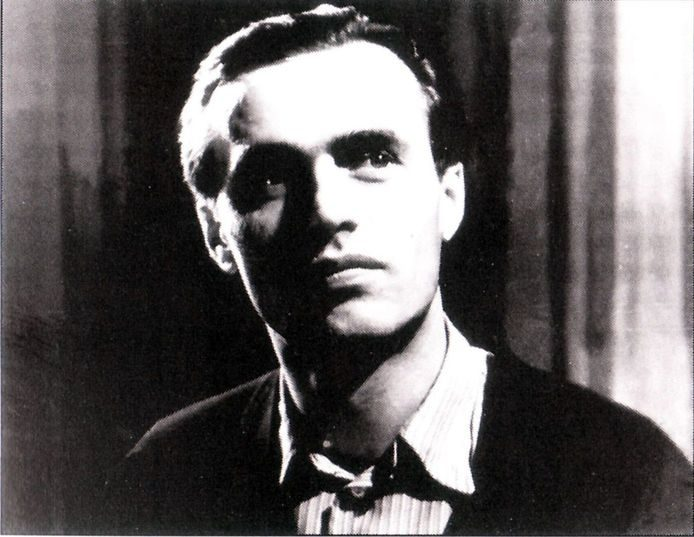

Біографії
Тара́с Григо́рович Шевче́нко
Народився 9 березня 1814 року у селі Моринці Звенигородського повіту Київської губернії в закріпаченій селянській родині. Рано став сиротою — мати померла, коли йому було 9 років, батько — у 11 років. Його доглядала сестра Катерина.
Восени 1822 року починає вчитися грамоти у місцевого дяка. Іде наймитувати до дяка Богорського, який прибув з Києва. Не витерпівши знущань дяка, тікає від нього і шукає в навколишніх селах учителя-маляра.
В 1828 році він потрапляє в число прислуги поміщика Енгельгардта, спочатку в ролі кухарчука, потім козачка. Помітивши у Тараса пристрасть до живопису, поміщик вирішує зробити його придворним художником. Він віддає свого кріпака в навчання викладачеві Віленського університету — портретисту Яну Рустему. У Вільні юний Тарас пробув 1,5 року.
Переїхавши 1831 року з Вільно до Петербурга, Енгельгардт взяв із собою Шевченка і віддав його в науку на 4 роки до живописця Василя Ширяєва. Улітку 1836 р. він познайомився зі своїм земляком — художником І. Сошенком, а через нього — з Євгеном Гребінкою, В. Григоровичем і О. Венеціановим. Навесні 1838 Карл Брюллов та Василь Жуковський викупили молодого поета з кріпацтва. Незабаром став студентом Академії мистецтв.
Першу збірку своїх поетичних творів видав 1840 під назвою «Кобзар». У першому виданні було 8 творів.
25 травня 1843 року з Петербурга виїхав в Україну. В лютому 1844 року виїхав з України до Петербурга через Москву. У 1844р. написав гостро політичну поему «Сон» («У всякого своя доля»), ставши на шлях безкомпромісної боротьби проти самодержавної системи тодішньої Російської Імперії. 5 квітня рада Академії мистецтв видала квиток на право проїзду на Україну. Вже в листопаді 1845 року збори Академії мистецтв у Петербурзі затвердили рішення ради про надання звання некласного художника. 31 березня (12 квітня) 1845 року виїхав із Петербурга через Москву до Києва.

Навесні 1846 року прибув до Києва. У квітні пристав до Кирило-Мефодіївського братства.
Заарештували 5 квітня 1847, відправили до Петербурга й ув’язнили в казематі. Заслали в солдати до Оренбурга. Деяке полегшення становища Шевченка настало навесні 1848 унаслідок включення його до складу Аральської експедиції.
У квітні 1850 Шевченка вдруге заарештовано і, після піврічного ув’язнення, запроторено в Новопетровський береговий форт.
2 серпня 1857– поета було звільнено з заслання.
10 березня 1861 року Шевченко помер в Петербурзі. Його ховають спочатку на Смоленському кладовищі, але, згідно з «Заповітом», 10 травня того ж року його прах перезахований в Україні над Дніпром на Чернечій горі (м. Канів)
Вірші:
- Реве та стогне Дніпр широкий
- За сонцем хмаронька пливе
- Зоре моя вечірняя
- Садок вишневий коло хати
- Світає, край неба палає
- Мені тринадцятий минало
Леся Українка (Лариса Петрівна Косач-Квітка)
Народилася 25 лютого 1871 в місті Новограді-Волинському. (Мати – Олена Пчілка, Батько — високоосвічений поміщик, дядько – Михайло Драгоманов). У будинку Косачів часто збиралися письменники, художники і музиканти, влаштовувалися вечори і домашні концерти
Вчилася у приватних учителів. У 6 років почала вчитися вишивати.
1881 рік став початком захворювання на туберкульоз. Тяжко хвора Леся вивчає класичні мови (грецьку і латинську). Восени 1883 року Лесі зроблено операцію на лівій руці, видалили кістки, уражені туберкульозом.
У грудні Леся повертається з Києва до Колодяжного, стан здоров’я поліпшується, з допомогою матері Леся вивчає французьку і німецьку мови.
Починаючи з 1884 року Леся активно пише вірші («Конвалія», «Сафо», «Літо краснеє минуло» і ін.) і публікує їх у часописі «Зоря» . Саме цього року з’явився псевдонім «Леся Українка».
1885 року у Львові вийшла збірка її перекладів творів Миколи Гоголя (виготовлена нею спільно з братом Михайлом). Українка багато перекладала (М. Гоголя, А. Міцкевича, Г. Гейне, В. Гюґо, Гомера й ін.).
7 серпня 1907 р. Леся Українка та Климент Квітка офіційно оформили шлюб у церкві, живуть в Криму. Поетеса завершує драматичну поему «Кассандра». Жандармами вчинено обшук на квартирі Косачів, конфісковано 121 книжку. Л. Українку разом із сестрою Ольгою заарештовано.
У 1908 році Леся Українка перебувала в Ялті, Києві, Одесі, Євпаторії, Батумі, Тбілісі. їздила до Берліна на консультацію з професором щодо операції на нирках.
Останні роки життя Л. Косач-Квітки пройшли в подорожах на лікування до Єгипту й на Кавказ.
Померла 1 серпня 1913 року в Сурамі у віці 42 років.Вірші:
- Надія
- Конвалія
- Сафо
- Літо краснеє минуло…
- Вечірня година
Костенко Ліна Василівна
Народилась 19 березня 1930 р. в містечку Ржищеві (неподалік від Києва) у родині вчителів.
У 1936 році родина перебралась із Ржищева до Києва, де майбутня поетеса закінчила середню школу.
Після закінчення середньої школи навчалася в Київському педагогічному інституті, а згодом — у Московському літературному інституті імені О. М. Горького, який закінчила в 1956 році.
Ліна Костенко була однією з перших і найпримітніших у плеяді молодих українських поетів, що виступили на рубежі 50—60-х років.
Збірки її віршів «Проміння землі» (1957) та «Вітрила» (1958) викликали інтерес читача й критики, а книга «Мандрівки серця», що вийшла в 1961р., не тільки закріпила успіх, а й засвідчила справжню творчу зрілість поетеси, поставила її ім’я серед визначних майстрів української поезії.
Збірку «Зоряний інтеграл» заборонили цензурою. Однак письменницю не арештували. Обмеження свободи творчої думки, різні «опали» в часи застою призвели до того, що досить тривалий час вірші Л. Костенко практично не потрапляли до друку. Після 16 років мовчання вийшла збірка «Над берегами вічної ріки» (1977). У 1979 році було опубліковано роман у віршах «Маруся Чурай» та «Неповторність» (1980), які стали небуденними явищами сучасної української поезії, явищами, які помітно впливають на весь її дальший розвиток. Перу Л. Костенко також належать збірки «Сад нетанучих скульптур» (1987), збірка віршів для дітей «Бузиновий цар» (1987).
2010 року вийшов перший роман Л. Костенко — «Записки українського самашедшого», що викликав великий ажіотаж.
У лютому 2011 року вийшла поетична збірка Л.Костенко «Річка Геракліта», куди ввійшли раніше написані вірші та 50 нових поезій.
У 2012 році була опублікована поетична збірка «Триста поезій. Вибране». Живе і працює Ліна Костенко в Києві.
Вірші:
- Крила
- Життя іде і все без коректур
- Буває часом сліпну від краси
- І все на світі треба пережити
- На світі можна жить без еталонів
- Страшні слова, коли вони мовчать
Васи́ль Андрі́йович Симоне́нко
Василь Андрійович Симоненко народився 8 січня 1935 р. в селищі Біївці Лубенського району на Полтавщині. Батьки його були колгоспники, усе дитинство пройшло на селі у важкі воєнні та повоєнні часи.
1952 р. закінчив середню школу в Тарандинцях і вступив на факультет журналістики Київського університету. Через п’ять років закінчив його і одружився на черкащанці Людмилі Півторадня. Працював у «Черкаській правді», «Молоді Черкащини», «Робітничій газеті».
Писати вірші почав ще в студентські роки, але в умовах прискіпливої радянської цензури друкувався неохоче.
Перша збірка Симоненка «Тиша і грім», що вийшла 1962 р., була впливом серця чистого і довірливого юнака, захопленого повівами «хрущовської відлиги». Збірка була схвально сприйнята критикою і читачами. Це єдина збірка, яка була видана за життя автора.
Разом з іншими талановитими представниками української молоді Василь Симоненко бере участь у роботі Клубу творчої молоді, їздить Україною, спілкуючись із ровесниками. Потім поет працює в комісії, що займалася розслідуванням масових розстрілів у катівнях НКВС. Потрапляє під нагляд КДБ
Улітку 1962р. міліціонери заарештували та жорстоко побили його. Відмовлялися друкувати твори, друзі відвернулися. Восени 1962р. починає щоденник «Окрайці думок». У 1963 вийшла казка «Цар Плаксій та Лоскотон» На початку вересня 1963р. ліг у лікарню, оскільки після побиття його мучили болі, було діагностовано рак нирок.
Помер він 14 грудня 1963 р. Поет прожив лише 28 років.
З великими труднощами друзям В. Симоненка вдалося надрукувати його твори: 1964 р. — «Земне тяжіння», 1965 р. — збірку новел «Вино з троянд», 1966 р. — «Поезії», 1981 р. — «Лебеді материнства».
Вірші:
- Жорна
- Баба Онися
- Піч
- Дід умер
- Леся Українка